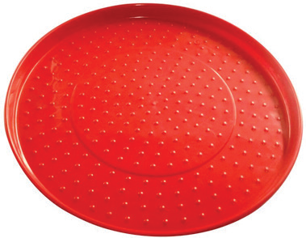
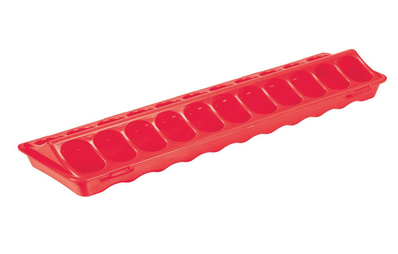
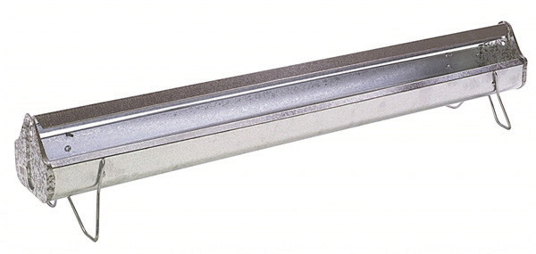
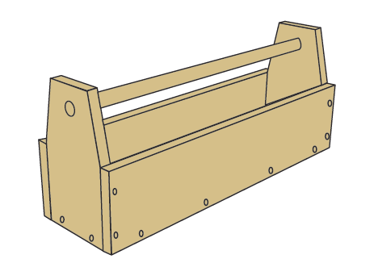
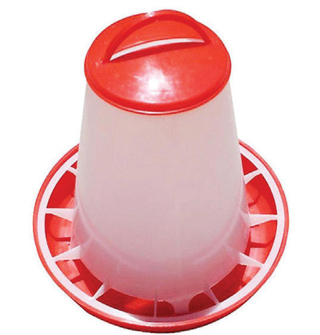
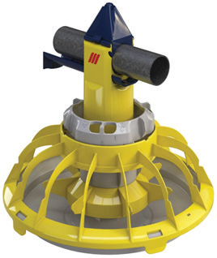

Figure 10.5 (a): Plate chick feeder

Figure 10.5 (b): Hopper chick feeder

Figure 10.5 (c): Long aluminium chicken feeder

Figure 10.5 (d): Long wooden chicken feeder

Figure 10.5 (e): Manual plastic chicken feeder

Figure 10.5 (f): Automatic chicken feeder
Figure 10.5: Examples of chicken feeders